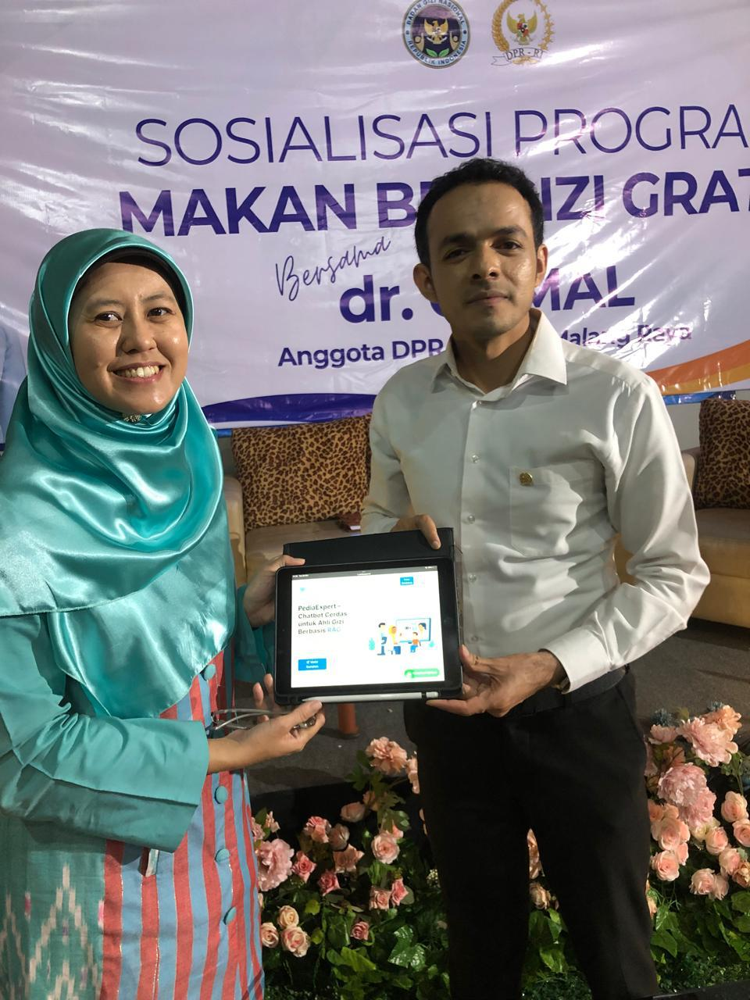

PediaExpert Hadirkan Inovasi Digital untuk Gizi Anak Indonesia, Disambut Hangat oleh Anggota DPR RI dr. Gamal Albinsaid
Malang, 28 Oktober 2025 — Platform digital PediaExpert.id kembali menegaskan komitmennya dalam mendukung peningkatan kualitas gizi anak Indonesia melalui integrasi teknologi dan ilmu gizi. Pada hari Selasa, 28 Oktober 2025, tim PediaExpert melakukan presentasi dan demo aplikasi secara langsung kepada dr. Gamal Albinsaid, M.Biomed., Anggota Komisi IX DPR RI yang membidangi Kesehatan, Ketenagakerjaan, dan Jaminan Sosial, bertempat di Araya, Malang.
Kegiatan ini berlangsung di sela Sosialisasi Program Makanan Bergizi Gratis (MBG) yang juga dihadiri oleh perwakilan MBG Pusat. Dalam kesempatan tersebut, Ummu Ditya Erliana, S.Gz, MS, Ph.D, RDN, CLC (Nutrition Domain Expert di PediaExpert dan dosen di Universitas Brawijaya) turut menjadi pemateri yang memberikan perspektif ilmiah mengenai implementasi Program MBG dari sisi gizi anak, dietetik digital, dan pendekatan evidence-based nutrition.
Acara ini menjadi ajang penting untuk memperlihatkan bagaimana PediaExpert sebagai platform inovatif mampu mendukung program nasional dalam pencegahan stunting, peningkatan status gizi anak, serta penguatan pelayanan primer, melalui edukasi digital, asesmen gizi interaktif, dan kolaborasi antara tenaga gizi profesional, akademisi, dan masyarakat.
Dalam sesi diskusi dan demo aplikasi, dr. Gamal menyampaikan apresiasi dan testimoni positif terhadap PediaExpert:
“PediaExpert.id adalah inovasi digital karya anak bangsa yang patut diapresiasi karena mampu mengintegrasikan ilmu gizi dan teknologi untuk meningkatkan kualitas layanan kesehatan anak di Indonesia. Saya mengenal langsung para expert di PediaExpert ini — para profesional yang kompeten, berdedikasi, dan memiliki visi kuat terhadap kemajuan gizi anak bangsa. Sebagai anggota Komisi IX DPR RI yang membidangi kesehatan, saya melihat platform ini sangat sejalan dengan agenda transformasi kesehatan nasional, khususnya dalam pencegahan stunting, peningkatan status gizi, dan penguatan pelayanan primer. PediaExpert.id sangat layak untuk diperluas ke tingkat nasional karena dapat menjadi bagian penting dari solusi menuju generasi emas Indonesia yang sehat dan cerdas.”
PediaExpert.id merupakan platform kolaboratif profesional gizi Indonesia yang berfokus pada edukasi publik, asesmen gizi digital, serta konsultasi berbasis keilmuan. Melalui fitur-fitur seperti nutrition chatbot, digital diet assessment, dan e-consultation, PediaExpert menghadirkan solusi teknologi yang mudah diakses untuk masyarakat luas sekaligus memperkuat peran dietisien dalam ekosistem kesehatan digital nasional.
Dengan dukungan moral dan apresiasi dari tokoh nasional seperti dr. Gamal Albinsaid, PediaExpert optimistis dapat memperluas dampak positifnya ke seluruh Indonesia, mendukung pemerintah dalam mewujudkan generasi emas 2045 yang sehat, cerdas, dan berdaya saing tinggi.
Kembali ke Press Release